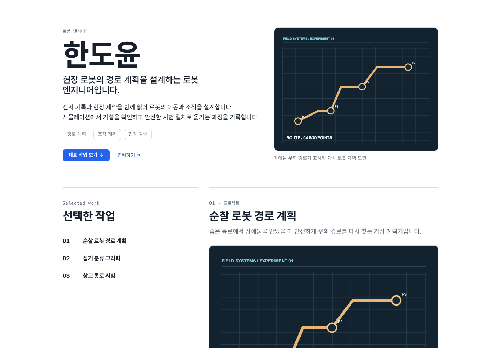
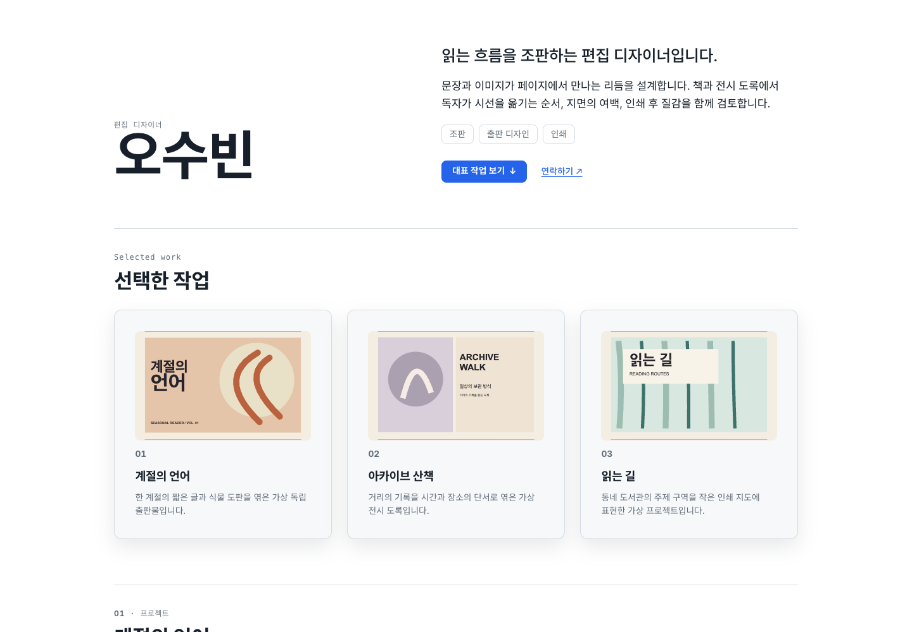
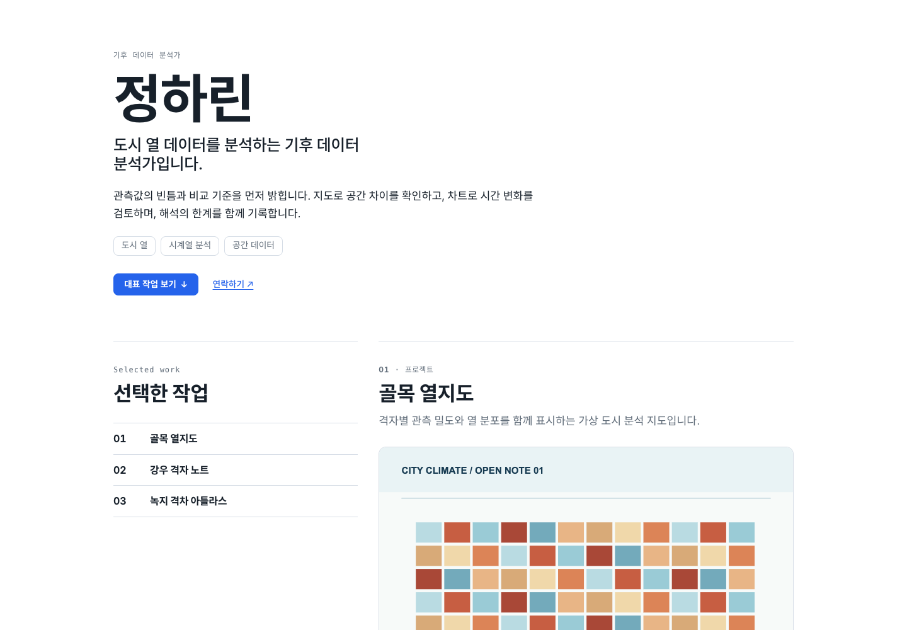
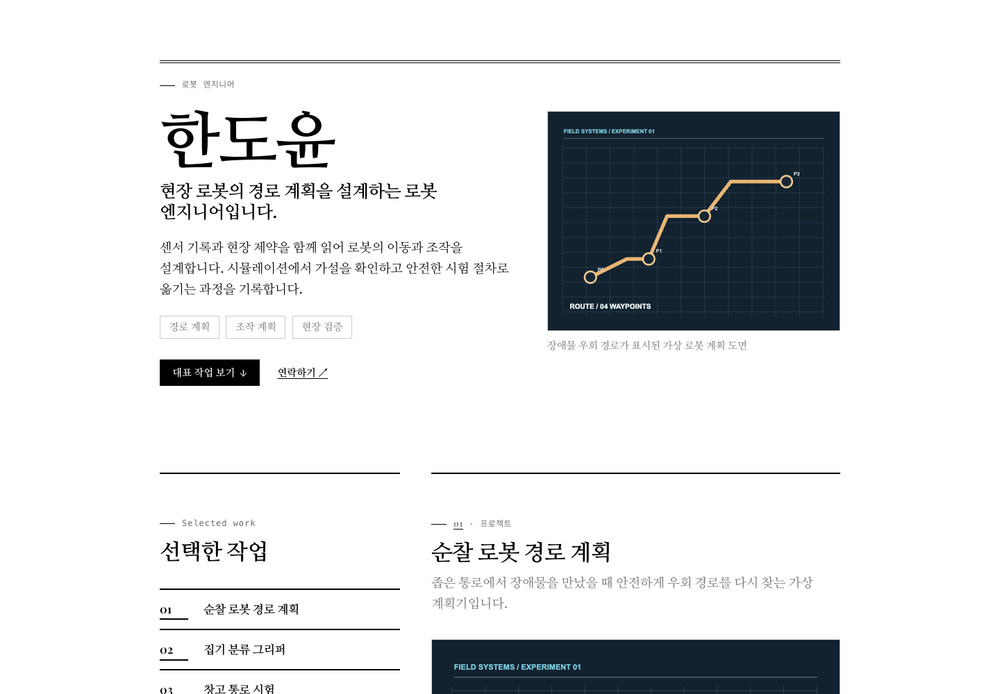
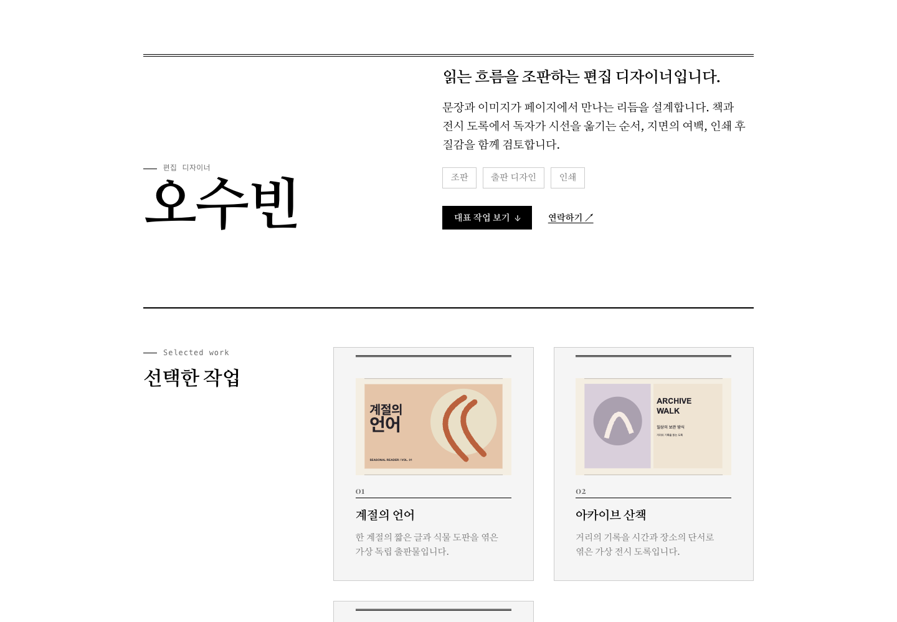
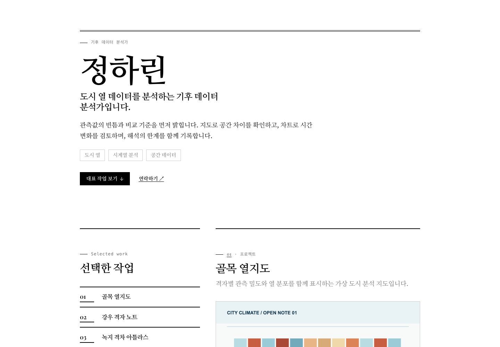
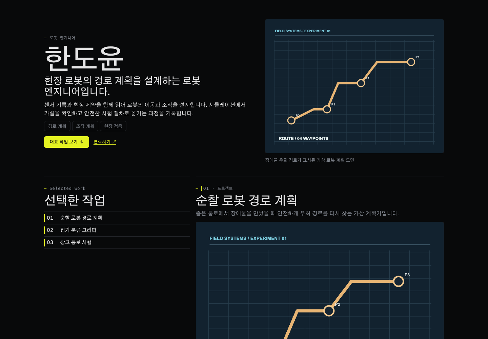
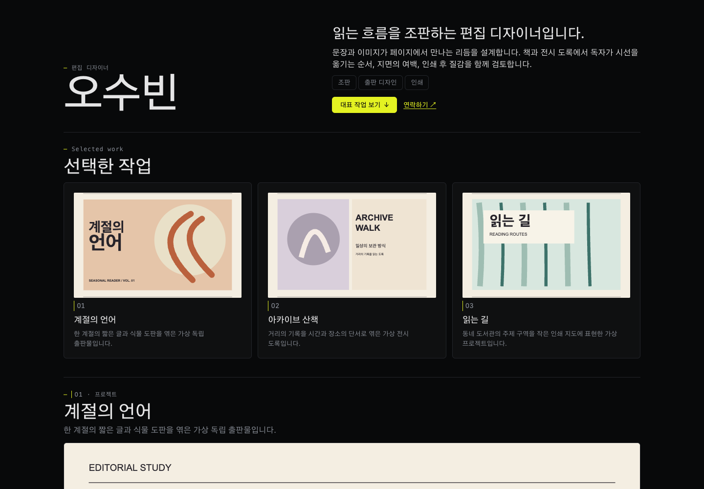
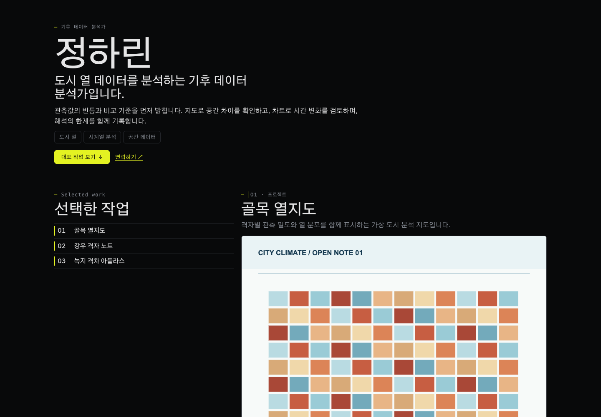

토큰 키트 재렌더 비교
모델을 다시 부르지 않고 저장된 모델 Spec에서 수집 원본 선택을 지우고 디자인 시스템 토큰 키트로 다시 그렸습니다. 첫 화면 구도는 재렌더 스크립트가 프로필마다 하나씩 배정했습니다. 인물·프로젝트·이미지는 가상 시험 자료입니다. 브라우저 검증 기록
clarity

한도윤 · 로봇 엔지니어 · 첫 화면 media

오수빈 · 편집 디자이너 · 첫 화면 split

정하린 · 기후 데이터 분석가 · 첫 화면 statement


designprompts-monochrome

한도윤 · 로봇 엔지니어 · 첫 화면 media

오수빈 · 편집 디자이너 · 첫 화면 split

정하린 · 기후 데이터 분석가 · 첫 화면 statement


refero-linear-midnight

한도윤 · 로봇 엔지니어 · 첫 화면 media

오수빈 · 편집 디자이너 · 첫 화면 split

정하린 · 기후 데이터 분석가 · 첫 화면 statement